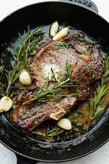

Ribeye Steak
Home

Description
A ribeye steak is a cut of beef from the rib primal of a cow, known for its rich flavor and tender texture. It's cut from the longissimus dorsi muscle, which runs from the sixth to twelfth ribs. The ribeye also includes the spinalis dorsi muscle, also known as the ribeye cap, and the complexus muscle.
Ingredients
- 2 10-12 ounce ribeye steaks at least 1 inch thick
- 2 teaspoons olive oil
- 1 teaspoon salt
- 1/2 teaspoon black pepper
- 1/2 teaspoon white pepper
- 2 tablespoons resting butter
Instructions
- Remove 2 (10-12 ounce) ribeye steaks from the refrigerator and any packaging and let sit at room temperature for at least 30 minutes, or up to 2 hours.
- Rub each side with the 2 teaspoons olive oil to coat. In a small bowl stir together 1 teaspoon salt,1/2 teaspoon black pepper, and 1/2 teaspoon white pepperRub both sides of each steak with the rub mixture.
- Preheat oven to 375 degrees Fahrenheit. Heat a heavy, oven-safe skillet over high heat until it is smoking hot. Sear steaks in the hot pan for 2-3 minutes per side until there is lots of golden browning on the surface. If the steak has a side of fat, use tongs to turn the steak onto its side and render the fat by searing it for 2-3 minutes as well.
- Slide the skillet with the seared steaks in it into the oven to finish cooking. Remove the steaks from the oven 5 degrees before the desired level of doneness is achieved, or 130℉ for medium. Use a meat thermometer to ensure accuracy.
- When the steaks are removed from the oven immediately top with 1 tablespoon on each steak of 2 tablespoons resting butter and allow the steaks to rest 10 minutes before cutting into them. The temperature of the steak will continue to rise as it rests by about 5 degrees.